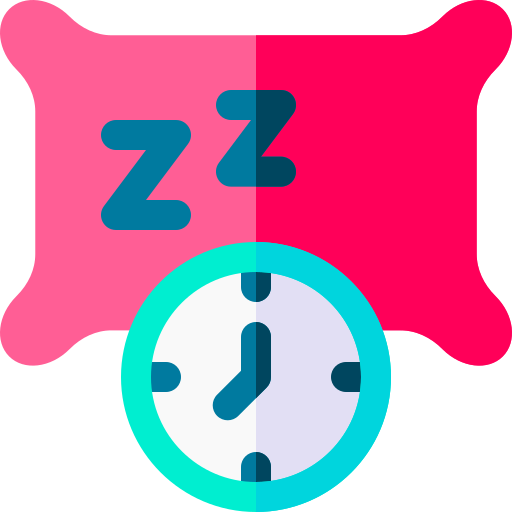
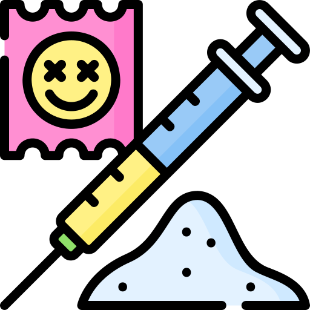

Obesidade
A obesidade é uma condição médica caracterizada pelo acúmulo excessivo
de gordura no corpo de uma pessoa, resultando em um índice de massa
corporal (IMC) igual ou superior a 30.
Diabetes
Diabetes é uma condição crônica que afeta a regulação do açúcar no
sangue e pode ter sérias consequências para a saúde se não for
adequadamente controlada. O diagnóstico precoce, o tratamento adequado
e a gestão eficaz são fundamentais para minimizar os riscos e melhorar
a qualidade de vida das pessoas com diabetes.
Anemia
A anemia é uma condição médica caracterizada pela diminuição da
quantidade de glóbulos vermelhos (hemácias) ou pela redução da
concentração de hemoglobina no sangue. Isso resulta em uma capacidade
reduzida do sangue em transportar oxigênio para os tecidos do corpo.
Hipertensão
Hipertensão é uma condição médica na qual a pressão do sangue nas
artérias é cronicamente elevada. Isso ocorre quando o coração bombeia
sangue com força excessiva ou quando as artérias estão estreitadas,
tornando mais difícil para o sangue fluir.
Insônia
A insônia é um distúrbio do sono caracterizado pela dificuldade em
iniciar ou manter o sono, resultando em um sono de má qualidade.
Pessoas com insônia podem ter dificuldade em adormecer, acordar
frequentemente durante a noite ou acordar muito cedo e não conseguir
voltar a dormir.
Colesterol alto
O aumento do nível do colesterol no sangue pode vir a causar o
bloqueio das artérias e veias do corpo, levando ao derrame e ao
infarto. O colesterol em nosso organismo vem de duas formas: do
próprio organismo e ainda através dos alimentos que são ingeridos
Alimentação saudável

Consumir uma dieta equilibrada e variada, com alimentos frescos, ricos
em nutrientes e fibras. Evitar alimentos processados, açúcares
refinados e gorduras saturadas. Beber bastante água.
Atividade física

Praticar exercícios físicos regularmente, de acordo com a capacidade e
preferência de cada um. Recomenda-se pelo menos 30 minutos de
atividade física moderada por dia.
Sono adequado

Dormir entre 7 a 8 horas por noite, manter um ambiente de sono
tranquilo e confortável.
Redução de estresse
Buscar maneiras saudáveis de lidar com o estresse, como meditação,
yoga, exercícios de respiração, hobbies, entre outras.
Evitar vícios

Evitar o consumo excessivo de álcool, tabaco, drogas e outras
substâncias nocivas.
Relações sociais positivas
Cultivar relacionamentos saudáveis e positivos, se conectar com amigos
e familiares, participar de atividades em grupo.